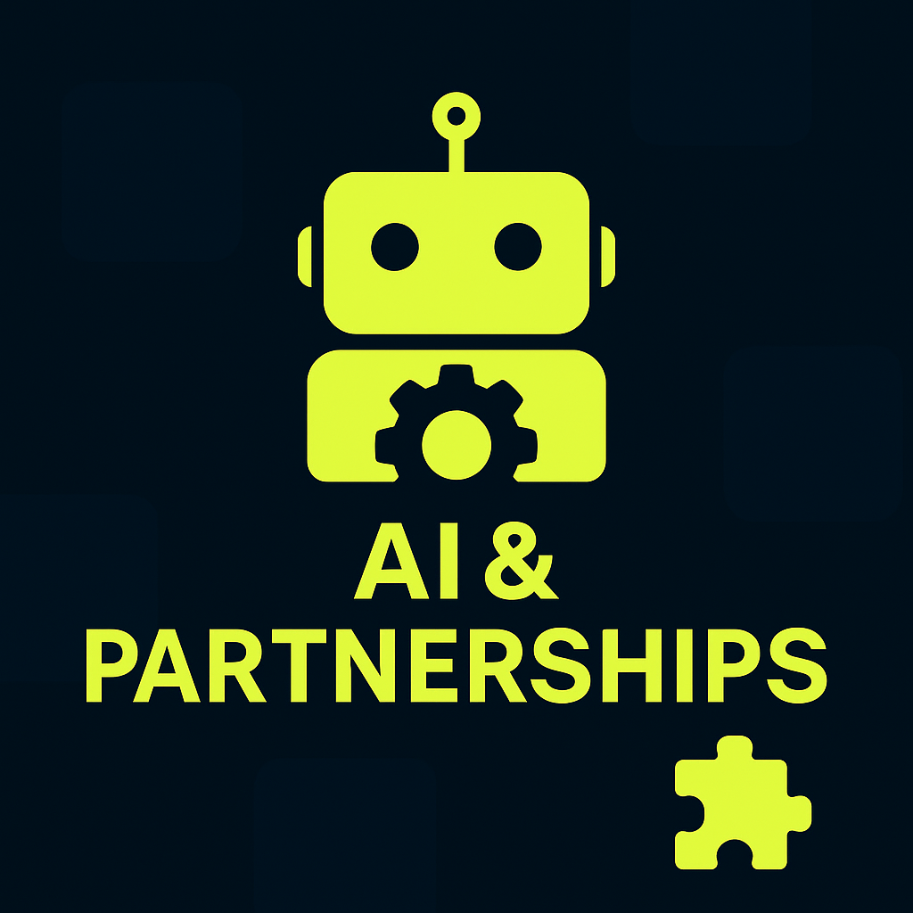
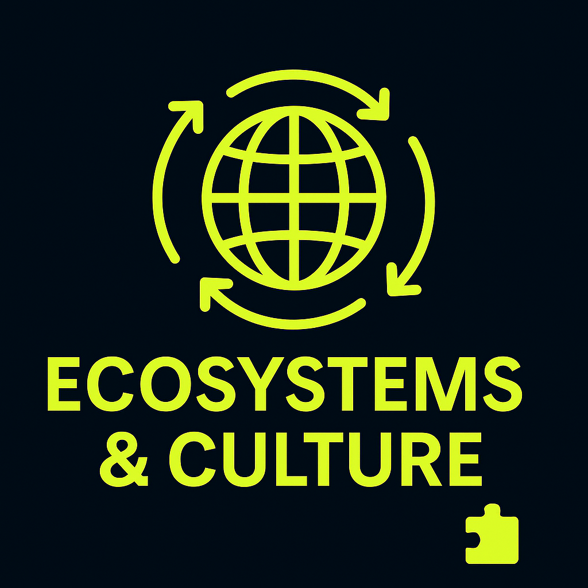
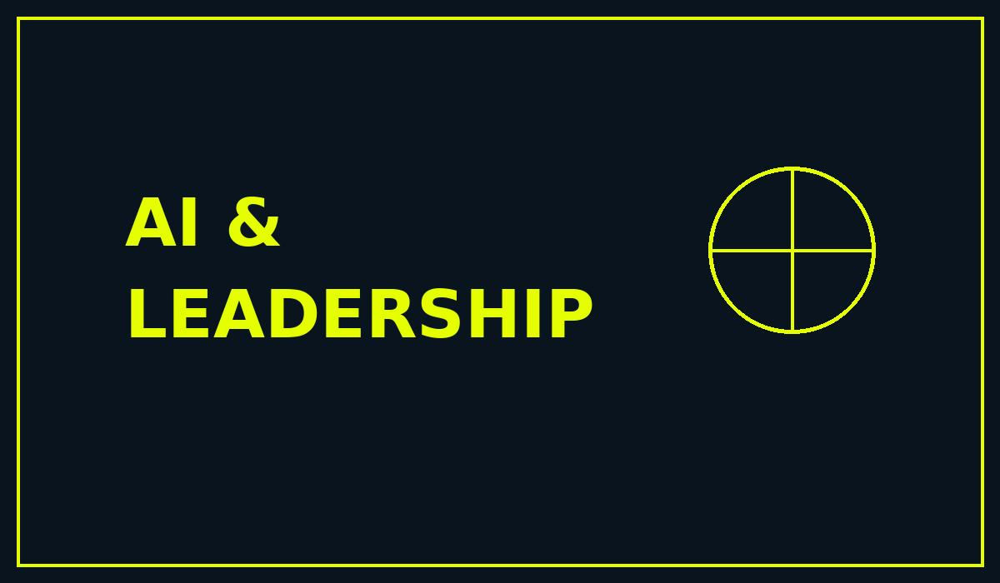

AI in combination with modern leadership practices can be a powerful advantage or a fast track to long-term failure.

A year of AI conversations with Microsoft, GitHub, AWS, and partners. Everyone wants AI, but few are ready for the realities. From ownership chaos to GTM challenges.
Read More
From digital nomad dreams to ecosystem strategies. How cultural awareness, fast learning, and adaptability shape modern partnerships across Software business, Cloud, and beyond.
Read More
The real issue is not AI itself, but leadership choices around it. Why empowering teams beats pure headcount cuts in long-term organizational resilience.
Read More